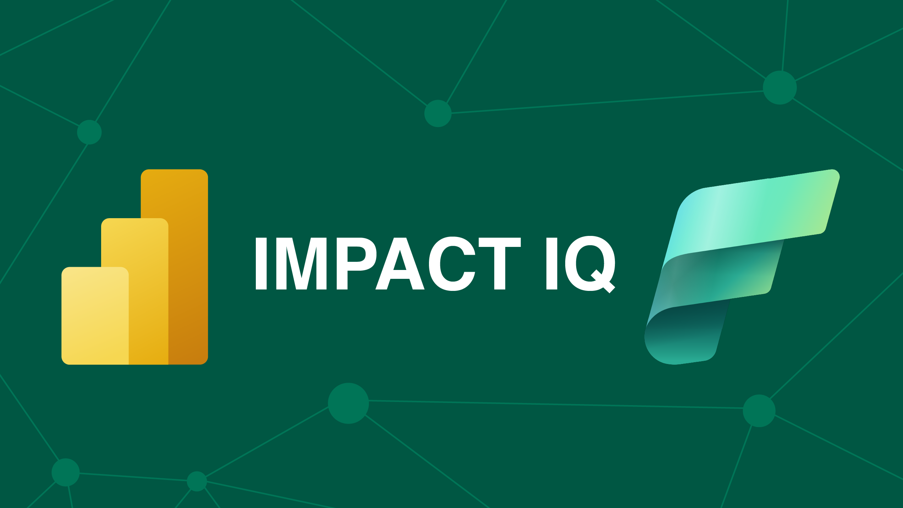

Know what's used, what will break — and back it all up.
Impact analysis & governance — down to the visual level.
What we'll cover today
From a single report to enterprise-scale governance — the story, the problem it creates, and the one-click tool that solves it.
A live demo follows the walkthrough.
The journey: simple → complex
The challenge & the gap
Meet ImpactIQ — features & what's new
Architecture & getting started
The Power BI journey starts simple
One model. One report. No problem.
- Easy to maintain
- Easy to update
- No downstream impact
Best practices lead to a Golden Model
A shared, reusable semantic model — the Microsoft-recommended way to scale.
- Many reports connect to a single model
- Encouraged by Microsoft best practices
- Creates a single source of truth
- Enables self-service analytics at scale
But then it gets complicated…
- Change a measure → broken visual
- Rename a column → bookmarks fail
- Delete a table → pages crash
Existing tools fall short
No solution reached the individual visual level — across every workspace.
Purview
No visual-level tracking of dependencies.
Power BI Service UI
Limited impact visibility across workspaces.
Manual checks
Time-consuming, tedious and error-prone.
Other tools
Don't reach into individual visual objects.
Meet ImpactIQ
Update & Run Tool
Pulls the latest version from GitHub, drops it into C:\Power BI Backups, runs the script, and opens the governance model. Always up to date.
A comprehensive feature set
Visual Impact Analysis
Trace measures, fields & tables to the exact visuals that use them.
Used & Unused Objects
See what's active — and what can be safely removed.
Environment Overview
Full breakdown of models, reports & dataflows via REST API.
Model · Report · Dataflow Backups
XMLA, Tabular Editor & pbi-tools across every capacity.
Refresh History & Lineage
Refresh tracking plus full parent/dependent measure chains.
Governance Model
Everything unified in one explorable Power BI model.
What's new in ImpactIQ
Workspace Selector
Choose exactly which workspaces to run against — or all.
Specific Models & Reports
Target individual items; connected assets come along.
Sovereign Cloud Support
Public, Germany, USGov, China, USGovHigh & USGovMil.
Broken Visuals + Page Links
Jump straight to the impacted report page.
Report-Level Measures
Surface report-only measures with full DAX & usage.
Wireframe Layouts
See exactly where each visual sits on the page.
From scan to insight — automatically
Loved by the Power BI community
Ready to transform your governance?
Open source · community driven · enterprise ready.
github.com/BeSmarterWithData/ImpactIQ